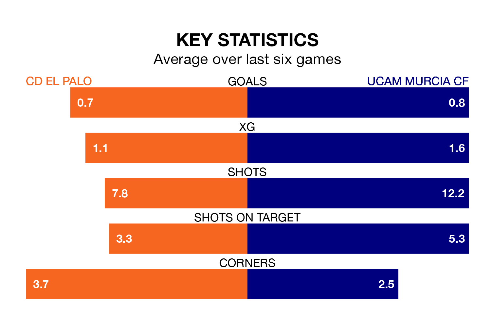

Struggling CD El Palo face UCAM Murcia CF at the Estadio San Ignacio on Sunday looking to build on a win in their last league outing.
After securing all three points with a 2-0 victory over Vélez on January 14, el Palo sit 15th in Segunda División RFEF Group 4.
They travel to play an UCAM Murcia side ninth in the standings, who lost in their last match, 2-0 against Marbella.
With 12 goals in 18 games so far this season, El Palo are the league's joint-second-lowest scorers with 0.7 goals per game. And they are conceding more than average, letting in 19 goals at a rate of 1.1 per game.
UCAM Murcia, meanwhile, are above average scorers, with 1.1 goals per game, compared to a league average of 1.0. They have also conceded 1.1 goals per game.
El Palo are in disappointing form in Segunda División RFEF Group 4, with two wins and four losses from their last six games.
With two wins and a draw over that period, the visitors' form is slightly better – they have taken seven points from 18, compared to the home side's six.
Updated: 10:02 (UTC), 19/01/24